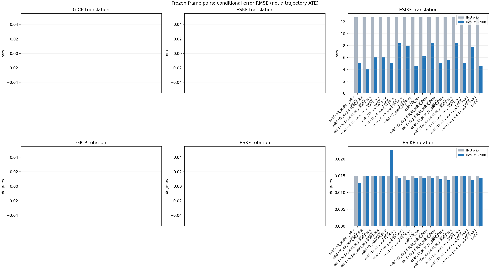

20261015_112757_right · depth=disparity_cache · cache=453030a0618f8996dbbf
模型视差：/home/ubuntu22/slam/SIO_SLAM/models/tensorrt/disp_896x448_fp16.plan；engine SHA256=604cf6ac1f705c877260711730dd5d2d58c2a21f3020c03c668401ef7fb1e768。输入为生产裁剪与光照处理后的 RGB 0..255；此实验使用原始浮点像素视差，不应用完整前端的邻域视差后处理。
原始 ONNX SHA256：e9f49736a65d68d06681add463866b6defdf78fdd7f4f50f6cc941b682fdc0bc。
代价体图改写验证：ONNX Runtime 固定随机特征输入，最大绝对误差 0；该项检查图改写，完整模型精度仍需由录制数据评估。
配准代码版本：744ac2d993ae629b0cc44a3b1d995e04ab4fad48；观测生成版本：744ac2d993ae629b0cc44a3b1d995e04ab4fad48。
固定图像对与纯 IMU 先验；ESKF 回放固定 GICP 观测，ESIKF 直接读取点云。真值只用于此报告。
同时查看 converged 与 solver_status：上游默认 Stereo 在 max_iter / stopped_at_minimum 时也可能置 converged=true。valid 表示输入检查通过，不表示精度提升。欧氏 GICP 未提供独立的点距 RMSE，该列显示 NaN。
误差按每对图像的锚点计算，单位 m / degrees。此处 RMSE 不是全序列 ATE；末帧受同一锚点条件约束。NIS 与条件马氏距离是诊断量，少量相关图像对不能用于宣称协方差已校准。
全部指标 CSV · R / P 矩阵 CSV · Stereo 求解逐轮 CSV · ESIKF 逐轮轨迹 CSV · 末轮 H / R / K_pose 矩阵 CSV · 配置快照 · 矢量图
unflagged 排除纯惯性先验平移误差超过 50 mm 的图像对；whitened 为误差按协方差白化后的每自由度均值，协方差与实际误差相符时约为 1。prior_whitened 用真值误差只检验先验 P；NIS 为 ESIKF 首轮 rᵀ(P+R)⁻¹r，不用真值，检验的是 P+R 的总量，单靠它分不开 P 与 R，偏差、错误对应和线性化误差也会抬高它。观测方差超过先验方差 1e+04 倍的方向视为不可观，从 NIS 及其自由度中去掉（nis_dof）。一致时 nis_per_dof 均值约 1、nis_over_chi2_median 中位数约 1；帧对少且共享序列，超出 95% 分位的比例只作参考。每轮重新关联时首轮只走到观测的一部分，nis 会偏小；nis_final 用最后一轮线性化点的创新 r_v + e_j，应以它为准。
| stage | method | variant | valid | total | result_translation_rmse_m | result_rotation_rmse_deg | result_translation_median_m | result_rotation_median_deg | result_translation_rmse_unflagged_m | result_rotation_rmse_unflagged_deg | improved_translation | improved_rotation | posterior_whitened_by_P_rot_mean | posterior_whitened_by_P_trans_mean | prior_whitened_by_P_rot_mean | prior_whitened_by_P_trans_mean | nis_per_dof_mean | nis_over_chi2_median_median | nis_exceeds_chi2_95_fraction | nis_final_per_dof_mean | nis_final_over_chi2_median_median | nis_final_exceeds_chi2_95_fraction |
|---|---|---|---|---|---|---|---|---|---|---|---|---|---|---|---|---|---|---|---|---|---|---|
| esikf | esikf | e2_anchor_prior | 5 | 5 | 0.0050008 | 0.01292 | 0.0017067 | 0.0048751 | 0.0050008 | 0.01292 | 3 | 3 | 31.064 | 113.04 | 28.444 | 3.3405 | 6.5612 | 3.4048 | 0.8 | 14.31 | 6.6467 | 1 |
| esikf | esikf | f0_e3_point_to_point | 5 | 5 | 0.0040814 | 0.01492 | 0.0023229 | 0.0045375 | 0.0040814 | 0.01492 | 3 | 3 | 24.421 | 0.91462 | 24.074 | 0.015574 | 0.055144 | 0.029579 | 0 | 0.040249 | 0.035935 | 0 |
| esikf | esikf | f0_f3_point_to_plane_trans | 5 | 5 | 0.0060481 | 0.014911 | 0.0039822 | 0.0045135 | 0.0060481 | 0.014911 | 2 | 2 | 24.421 | 20.685 | 24.074 | 0.015574 | 0.278 | 0.061006 | 0 | 0.541 | 0.054687 | 0 |
| esikf | esikf | f0_f3s_point_to_plane_trans | 5 | 5 | 0.006063 | 0.014925 | 0.0039789 | 0.0044847 | 0.006063 | 0.014925 | 2 | 0 | 24.074 | 20.932 | 24.074 | 0.015574 | 0.278 | 0.061006 | 0 | 0.59836 | 0.05479 | 0 |
| esikf | esikf | f0_relative_prior | 5 | 5 | 0.0050917 | 0.0226 | 0.0041459 | 0.0042538 | 0.0050917 | 0.0226 | 3 | 2 | 28.563 | 106.37 | 24.074 | 0.015574 | 5.3532 | 2.184 | 0.4 | 13.455 | 4.3791 | 0.8 |
| esikf | esikf | f2_e3_point_to_plane | 5 | 5 | 0.0083772 | 0.014354 | 0.0037266 | 0.0046487 | 0.0083772 | 0.014354 | 4 | 3 | 29.339 | 2.9823 | 28.444 | 3.3405 | 0.43925 | 0.11777 | 0 | 0.54526 | 0.11777 | 0 |
| esikf | esikf | f2_e3_point_to_point | 5 | 5 | 0.0079058 | 0.013809 | 0.0036571 | 0.0045607 | 0.0079058 | 0.013809 | 5 | 2 | 29.389 | 4.9534 | 28.444 | 3.3405 | 0.15509 | 0.1309 | 0 | 0.34077 | 0.14489 | 0 |
| esikf | esikf | f2_point_to_plane | 5 | 5 | 0.0046203 | 0.014324 | 0.0027234 | 0.0046473 | 0.0046203 | 0.014324 | 4 | 3 | 33.021 | 9.8525 | 28.444 | 3.3405 | 5.7707 | 6.7473 | 0.6 | 4.7815 | 3.8775 | 0.6 |
| esikf | esikf | f2_ray | 5 | 5 | 0.0062859 | 0.014311 | 0.0025752 | 0.0049572 | 0.0062859 | 0.014311 | 2 | 2 | 33.963 | 12.111 | 28.444 | 3.3405 | 12.781 | 17.691 | 1 | 8.0931 | 7.7558 | 1 |
| esikf | esikf | f3_e3_point_to_plane_trans | 5 | 5 | 0.0084769 | 0.014321 | 0.0037374 | 0.0046293 | 0.0084769 | 0.014321 | 5 | 2 | 29.297 | 2.9607 | 28.444 | 3.3405 | 1.1132 | 0.78353 | 0.2 | 0.93732 | 0.78353 | 0 |
| esikf | esikf | f3_point_to_plane_trans | 5 | 5 | 0.0050572 | 0.013932 | 0.0037587 | 0.0046507 | 0.0050572 | 0.013932 | 3 | 2 | 33.094 | 13.564 | 28.444 | 3.3405 | 7.0844 | 4.9087 | 0.8 | 7.0674 | 4.3058 | 0.8 |
| esikf | esikf | f3_point_to_point_trans | 5 | 5 | 0.0055696 | 0.013632 | 0.0044458 | 0.0050082 | 0.0055696 | 0.013632 | 2 | 2 | 36.036 | 149.25 | 28.444 | 3.3405 | 2.3077 | 1.4348 | 0.2 | 18.039 | 11.714 | 0.8 |
| esikf | esikf | f3s_e3_point_to_plane_trans | 5 | 5 | 0.0084519 | 0.014925 | 0.0037374 | 0.0044847 | 0.0084519 | 0.014925 | 5 | 0 | 28.444 | 2.9547 | 28.444 | 3.3405 | 1.1132 | 0.78353 | 0.2 | 0.94969 | 0.78353 | 0 |
| esikf | esikf | f3s_point_to_plane_trans | 5 | 5 | 0.0050491 | 0.014925 | 0.0037585 | 0.0044847 | 0.0050491 | 0.014925 | 3 | 0 | 28.444 | 13.553 | 28.444 | 3.3405 | 7.0844 | 4.9087 | 0.8 | 7.0809 | 4.3058 | 0.8 |
| esikf | esikf | f4_e3_point_to_point_iter20 | 5 | 5 | 0.007733 | 0.013713 | 0.0036571 | 0.0045607 | 0.007733 | 0.013713 | 5 | 2 | 29.301 | 4.8264 | 28.444 | 3.3405 | 0.15509 | 0.1309 | 0 | 0.35025 | 0.14489 | 0 |
| esikf | esikf | f4_point_to_plane_iter20 | 5 | 5 | 0.0045653 | 0.01429 | 0.0027234 | 0.0046473 | 0.0045653 | 0.01429 | 4 | 3 | 32.985 | 9.6816 | 28.444 | 3.3405 | 5.7707 | 6.7473 | 0.6 | 4.766 | 3.7902 | 0.6 |

| stage | case | method | variant | status | solver_status | inliers | converged | covariance_convention | covariance_from_hessian | fitness | registration_rmse_m | prior_trans_error_m | result_trans_error_m | prior_rot_error_deg | result_rot_error_deg | prior_flagged | R_rot_trace_rad2 | R_pos_trace_m2 | nis_regularized | posterior_whitened_by_P_rot | posterior_whitened_by_P_trans | prior_whitened_by_P_rot | prior_whitened_by_P_trans | nis_per_dof | nis_dof | nis_final_per_dof | nis_final_dof |
|---|---|---|---|---|---|---|---|---|---|---|---|---|---|---|---|---|---|---|---|---|---|---|---|---|---|---|---|
| esikf | static_start | esikf | e2_anchor_prior | updated | converged | 15559 | 1 | 1 | 0 | 0 | 8.5048e-05 | 0.00037565 | 0.00089366 | 0.00095665 | 0 | 1.3694e-07 | 9.5327e-07 | nan | 0.33762 | 0.94478 | 0.28676 | 0.027309 | 2.3617 | 6 | 2.4614 | 6 | |
| esikf | static_start | esikf | f0_relative_prior | updated | converged | 15560 | 1 | 1 | 0 | 0 | 8.5048e-05 | 0.0010019 | 0.00089366 | 0.00091751 | 0 | 1.3667e-07 | 9.4896e-07 | nan | 0.26432 | 2.2886 | 0.25854 | 0.0012798 | 1.792 | 6 | 1.7125 | 6 | |
| esikf | static_start | esikf | f2_point_to_plane | updated | converged | 15559 | 1 | 1 | 0 | 0 | 8.5048e-05 | 0.00028531 | 0.00089366 | 0.00089387 | 0 | 8.5111e-07 | 3.6572e-06 | nan | 0.28786 | 0.36078 | 0.28676 | 0.027309 | 1.9497 | 6 | 1.7892 | 6 | |
| esikf | static_start | esikf | f2_ray | updated | converged | 15558 | 1 | 1 | 0 | 0 | 8.5048e-05 | 0.00052124 | 0.00089366 | 0.00090527 | 0 | 0.013069 | 1.4869e-05 | nan | 0.29246 | 1.2373 | 0.28676 | 0.027309 | 4.0297 | 3 | 4.9918 | 3 | |
| esikf | static_start | esikf | f3_point_to_point_trans | updated | converged | 15559 | 1 | 1 | 0 | 0 | 8.5048e-05 | 0.00038295 | 0.00089366 | 0.00089868 | 0 | 0.13697 | 9.5385e-07 | nan | 0.28935 | 0.96539 | 0.28676 | 0.027309 | 1.0997 | 3 | 1.3 | 3 | |
| esikf | static_start | esikf | f3_point_to_plane_trans | updated | converged | 15559 | 1 | 1 | 0 | 0 | 8.5048e-05 | 0.00036325 | 0.00089366 | 0.00089854 | 0 | 0.85143 | 3.6596e-06 | nan | 0.28918 | 0.58702 | 0.28676 | 0.027309 | 3.8713 | 3 | 3.3958 | 3 | |
| esikf | static_start | esikf | f0_f3_point_to_plane_trans | updated | converged | 15519 | 1 | 1 | 0 | 0 | 8.5048e-05 | 0.0029776 | 0.00089366 | 0.00090098 | 0 | 0.85588 | 3.7326e-06 | nan | 0.26237 | 7.2896 | 0.25854 | 0.0012798 | 0.99322 | 3 | 2.0001 | 3 | |
| esikf | static_start | esikf | f3s_point_to_plane_trans | updated | converged | 15559 | 1 | 1 | 0 | 0 | 8.5048e-05 | 0.00036325 | 0.00089366 | 0.00089366 | 0 | 0.85143 | 3.6596e-06 | nan | 0.28676 | 0.58702 | 0.28676 | 0.027309 | 3.8713 | 3 | 3.3958 | 3 | |
| esikf | static_start | esikf | f0_f3s_point_to_plane_trans | updated_not_converged | max_iterations | 15531 | 0 | 1 | 0 | 0 | 8.5048e-05 | 0.0030279 | 0.00089366 | 0.00089366 | 0 | 0.85244 | 3.6899e-06 | nan | 0.25854 | 7.8522 | 0.25854 | 0.0012798 | 0.99322 | 3 | 2.2745 | 3 | |
| esikf | static_start | esikf | f4_point_to_plane_iter20 | updated | converged | 15559 | 1 | 1 | 0 | 0 | 8.5048e-05 | 0.00028531 | 0.00089366 | 0.00089387 | 0 | 8.5111e-07 | 3.6572e-06 | nan | 0.28786 | 0.36078 | 0.28676 | 0.027309 | 1.9497 | 6 | 1.7892 | 6 | |
| esikf | static_start | esikf | f2_e3_point_to_point | updated | converged | 15559 | 1 | 1 | 0 | 0 | 8.5048e-05 | 8.1885e-05 | 0.00089366 | 0.00089398 | 0 | 1.5228e-05 | 7.9288e-05 | nan | 0.28725 | 0.025534 | 0.28676 | 0.027309 | 0.028461 | 4 | 0.028461 | 4 | |
| esikf | static_start | esikf | f0_e3_point_to_point | updated | converged | 15559 | 1 | 1 | 0 | 0 | 8.5048e-05 | 0.00016175 | 0.00089366 | 0.00089432 | 0 | 1.5228e-05 | 7.928e-05 | nan | 0.259 | 0.0043376 | 0.25854 | 0.0012798 | 0.024822 | 4 | 0.025386 | 4 | |
| esikf | static_start | esikf | f2_e3_point_to_plane | updated | converged | 15559 | 1 | 1 | 0 | 0 | 8.5048e-05 | 8.5091e-05 | 0.00089366 | 0.00089343 | 0 | 4.9757e-05 | 0.00013107 | nan | 0.28675 | 0.027462 | 0.28676 | 0.027309 | 0.068292 | 3 | 0.068292 | 3 | |
| esikf | static_start | esikf | f3_e3_point_to_plane_trans | updated | converged | 15559 | 1 | 1 | 0 | 0 | 8.5048e-05 | 8.2622e-05 | 0.00089366 | 0.00089381 | 0 | 0.85157 | 0.00013107 | nan | 0.28683 | 0.02589 | 0.28676 | 0.027309 | 0.12644 | 3 | 0.12644 | 3 | |
| esikf | static_start | esikf | f3s_e3_point_to_plane_trans | updated | converged | 15559 | 1 | 1 | 0 | 0 | 8.5048e-05 | 8.2622e-05 | 0.00089366 | 0.00089366 | 0 | 0.85157 | 0.00013107 | nan | 0.28676 | 0.02589 | 0.28676 | 0.027309 | 0.12644 | 3 | 0.12644 | 3 | |
| esikf | static_start | esikf | f4_e3_point_to_point_iter20 | updated | converged | 15559 | 1 | 1 | 0 | 0 | 8.5048e-05 | 8.1885e-05 | 0.00089366 | 0.00089398 | 0 | 1.5228e-05 | 7.9288e-05 | nan | 0.28725 | 0.025534 | 0.28676 | 0.027309 | 0.028461 | 4 | 0.028461 | 4 | |
| esikf | sync_motion | esikf | e2_anchor_prior | updated | converged | 16426 | 1 | 1 | 0 | 0 | 0.00092575 | 0.00095367 | 0.0029279 | 0.0017957 | 0 | 1.2974e-07 | 9.124e-07 | nan | 0.97713 | 5.1796 | 2.3439 | 1.9446 | 3.0349 | 6 | 4.4606 | 6 | |
| esikf | sync_motion | esikf | f0_relative_prior | updated_not_converged | max_iterations | 16445 | 0 | 1 | 0 | 0 | 0.00092575 | 0.0041459 | 0.0029279 | 0.0033209 | 0 | 1.2924e-07 | 9.0483e-07 | nan | 3.0534 | 41.05 | 2.2666 | 0.0062497 | 1.9467 | 6 | 3.1588 | 6 | |
| esikf | sync_motion | esikf | f2_point_to_plane | updated | converged | 16462 | 1 | 1 | 0 | 0 | 0.00092575 | 0.00086779 | 0.0029279 | 0.002659 | 0 | 8.8449e-07 | 3.6462e-06 | nan | 1.9524 | 2.0782 | 2.3439 | 1.9446 | 12.69 | 6 | 13.033 | 6 | |
| esikf | sync_motion | esikf | f2_ray | updated | converged | 16434 | 1 | 1 | 0 | 0 | 0.00092575 | 0.0012026 | 0.0029279 | 0.002058 | 0 | 0.0093566 | 1.2745e-05 | nan | 1.2247 | 4.0125 | 2.3439 | 1.9446 | 18.443 | 3 | 18.922 | 3 | |
| esikf | sync_motion | esikf | f3_point_to_point_trans | updated | converged | 16413 | 1 | 1 | 0 | 0 | 0.00092575 | 0.0031427 | 0.0029279 | 0.0020498 | 0 | 0.12976 | 9.0809e-07 | nan | 1.1863 | 77.456 | 2.3439 | 1.9446 | 6.8321 | 3 | 49.461 | 3 | |
| esikf | sync_motion | esikf | f3_point_to_plane_trans | updated | converged | 16421 | 1 | 1 | 0 | 0 | 0.00092575 | 0.00085823 | 0.0029279 | 0.0025545 | 0 | 0.88951 | 3.6614e-06 | nan | 1.811 | 2.3223 | 2.3439 | 1.9446 | 17.26 | 3 | 18.236 | 3 | |
| esikf | sync_motion | esikf | f0_f3_point_to_plane_trans | updated_not_converged | max_iterations | 16429 | 0 | 1 | 0 | 0 | 0.00092575 | 0.0078856 | 0.0029279 | 0.00288 | 0 | 0.88182 | 3.4862e-06 | nan | 2.2008 | 46.935 | 2.2666 | 0.0062497 | 0.32934 | 3 | 0.63785 | 3 | |
| esikf | sync_motion | esikf | f3s_point_to_plane_trans | updated | converged | 16422 | 1 | 1 | 0 | 0 | 0.00092575 | 0.00085988 | 0.0029279 | 0.0029279 | 0 | 0.88965 | 3.6615e-06 | nan | 2.3439 | 2.3319 | 2.3439 | 1.9446 | 17.26 | 3 | 18.233 | 3 | |
| esikf | sync_motion | esikf | f0_f3s_point_to_plane_trans | updated_not_converged | max_iterations | 16437 | 0 | 1 | 0 | 0 | 0.00092575 | 0.0079464 | 0.0029279 | 0.0029279 | 0 | 0.88008 | 3.4791e-06 | nan | 2.2666 | 47.436 | 2.2666 | 0.0062497 | 0.32934 | 3 | 0.64995 | 3 | |
| esikf | sync_motion | esikf | f4_point_to_plane_iter20 | updated | converged | 16462 | 1 | 1 | 0 | 0 | 0.00092575 | 0.00086779 | 0.0029279 | 0.002659 | 0 | 8.8449e-07 | 3.6462e-06 | nan | 1.9524 | 2.0782 | 2.3439 | 1.9446 | 12.69 | 6 | 13.033 | 6 | |
| esikf | sync_motion | esikf | f2_e3_point_to_point | updated | converged | 16472 | 1 | 1 | 0 | 0 | 0.00092575 | 0.000904 | 0.0029279 | 0.0029028 | 0 | 1.437e-05 | 7.5351e-05 | nan | 2.3086 | 1.8884 | 2.3439 | 1.9446 | 0.079455 | 4 | 0.079455 | 4 | |
| esikf | sync_motion | esikf | f0_e3_point_to_point | updated | converged | 16410 | 1 | 1 | 0 | 0 | 0.00092575 | 0.0023229 | 0.0029279 | 0.002911 | 0 | 1.4474e-05 | 7.647e-05 | nan | 2.2474 | 0.27479 | 2.2666 | 0.0062497 | 0.01726 | 4 | 0.06392 | 4 | |
| esikf | sync_motion | esikf | f2_e3_point_to_plane | updated | converged | 16472 | 1 | 1 | 0 | 0 | 0.00092575 | 0.00091501 | 0.0029279 | 0.0029172 | 0 | 5.1505e-05 | 0.00013014 | nan | 2.3284 | 1.9101 | 2.3439 | 1.9446 | 0.09288 | 3 | 0.09288 | 3 | |
| esikf | sync_motion | esikf | f3_e3_point_to_plane_trans | updated | converged | 16472 | 1 | 1 | 0 | 0 | 0.00092575 | 0.00089467 | 0.0029279 | 0.0029188 | 0 | 0.88149 | 0.00013014 | nan | 2.3308 | 1.8221 | 2.3439 | 1.9446 | 0.61794 | 3 | 0.61794 | 3 | |
| esikf | sync_motion | esikf | f3s_e3_point_to_plane_trans | updated | converged | 16472 | 1 | 1 | 0 | 0 | 0.00092575 | 0.00089467 | 0.0029279 | 0.0029279 | 0 | 0.88149 | 0.00013014 | nan | 2.3439 | 1.8221 | 2.3439 | 1.9446 | 0.61794 | 3 | 0.61794 | 3 | |
| esikf | sync_motion | esikf | f4_e3_point_to_point_iter20 | updated | converged | 16472 | 1 | 1 | 0 | 0 | 0.00092575 | 0.000904 | 0.0029279 | 0.0029028 | 0 | 1.437e-05 | 7.5351e-05 | nan | 2.3086 | 1.8884 | 2.3439 | 1.9446 | 0.079455 | 4 | 0.079455 | 4 | |
| esikf | main_motion | esikf | e2_anchor_prior | updated_not_converged | max_iterations | 20135 | 0 | 1 | 0 | 0 | 0.0037537 | 0.0017067 | 0.019122 | 0.017842 | 0 | 9.3913e-08 | 9.7794e-07 | nan | 125.16 | 4.2328 | 114.85 | 4.5341 | 1.3109 | 6 | 5.9246 | 6 | |
| esikf | main_motion | esikf | f0_relative_prior | updated_not_converged | max_iterations | 20129 | 0 | 1 | 0 | 0 | 0.0037537 | 0.0019446 | 0.019122 | 0.018093 | 0 | 9.3829e-08 | 9.7784e-07 | nan | 95.18 | 6.963 | 99.492 | 0.014453 | 0.66342 | 6 | 3.9033 | 6 | |
| esikf | main_motion | esikf | f2_point_to_plane | updated | converged | 20212 | 1 | 1 | 0 | 0 | 0.0037537 | 0.0031768 | 0.019122 | 0.018998 | 0 | 7.5395e-07 | 4.0185e-06 | nan | 130.94 | 7.6308 | 114.85 | 4.5341 | 0.68696 | 6 | 0.7396 | 6 | |
| esikf | main_motion | esikf | f2_ray | updated | converged | 20243 | 1 | 1 | 0 | 0 | 0.0037537 | 0.0047687 | 0.019122 | 0.019677 | 0 | 0.0074028 | 1.9363e-05 | nan | 136.76 | 13.424 | 114.85 | 4.5341 | 5.9743 | 3 | 7.5529 | 3 | |
| esikf | main_motion | esikf | f3_point_to_point_trans | updated_not_converged | max_iterations | 20257 | 0 | 1 | 0 | 0 | 0.0037537 | 0.0071743 | 0.019122 | 0.020087 | 0 | 0.092879 | 9.5217e-07 | nan | 150.54 | 179.93 | 114.85 | 4.5341 | 1.5117 | 3 | 27.194 | 3 | |
| esikf | main_motion | esikf | f3_point_to_plane_trans | updated | converged | 20213 | 1 | 1 | 0 | 0 | 0.0037537 | 0.0037587 | 0.019122 | 0.019284 | 0 | 0.75268 | 4.0322e-06 | nan | 134.06 | 9.6642 | 114.85 | 4.5341 | 1.9015 | 3 | 2.6758 | 3 | |
| esikf | main_motion | esikf | f0_f3_point_to_plane_trans | updated_not_converged | max_iterations | 20191 | 0 | 1 | 0 | 0 | 0.0037537 | 0.0039822 | 0.019122 | 0.019126 | 0 | 0.75593 | 4.0577e-06 | nan | 100.76 | 8.2261 | 99.492 | 0.014453 | 0.0091108 | 3 | 0.016226 | 3 | |
| esikf | main_motion | esikf | f3s_point_to_plane_trans | updated | converged | 20213 | 1 | 1 | 0 | 0 | 0.0037537 | 0.0037585 | 0.019122 | 0.019122 | 0 | 0.75268 | 4.0322e-06 | nan | 114.85 | 9.6633 | 114.85 | 4.5341 | 1.9015 | 3 | 2.6784 | 3 | |
| esikf | main_motion | esikf | f0_f3s_point_to_plane_trans | updated_not_converged | max_iterations | 20191 | 0 | 1 | 0 | 0 | 0.0037537 | 0.0039789 | 0.019122 | 0.019122 | 0 | 0.7559 | 4.0576e-06 | nan | 99.492 | 8.2184 | 99.492 | 0.014453 | 0.0091108 | 3 | 0.016253 | 3 | |
| esikf | main_motion | esikf | f4_point_to_plane_iter20 | updated | converged | 20212 | 1 | 1 | 0 | 0 | 0.0037537 | 0.0031768 | 0.019122 | 0.018998 | 0 | 7.5395e-07 | 4.0185e-06 | nan | 130.94 | 7.6308 | 114.85 | 4.5341 | 0.68696 | 6 | 0.7396 | 6 | |
| esikf | main_motion | esikf | f2_e3_point_to_point | updated | converged | 20233 | 1 | 1 | 0 | 0 | 0.0037537 | 0.0036571 | 0.019122 | 0.019128 | 0 | 1.0199e-05 | 7.6987e-05 | nan | 117.24 | 4.6966 | 114.85 | 4.5341 | 0.10985 | 4 | 0.12159 | 4 | |
| esikf | main_motion | esikf | f0_e3_point_to_point | updated_not_converged | max_iterations | 20152 | 0 | 1 | 0 | 0 | 0.0037537 | 0.0019027 | 0.019122 | 0.019108 | 0 | 1.0415e-05 | 8.0885e-05 | nan | 100.57 | 0.058265 | 99.492 | 0.014453 | 0.0062793 | 5 | 0.031274 | 5 | |
| esikf | main_motion | esikf | f2_e3_point_to_plane | updated | converged | 20246 | 1 | 1 | 0 | 0 | 0.0037537 | 0.0037266 | 0.019122 | 0.019123 | 0 | 4.3443e-05 | 0.0001393 | nan | 116.35 | 4.6077 | 114.85 | 4.5341 | 0.040017 | 3 | 0.040017 | 3 | |
| esikf | main_motion | esikf | f3_e3_point_to_plane_trans | updated | converged | 20246 | 1 | 1 | 0 | 0 | 0.0037537 | 0.0037374 | 0.019122 | 0.01913 | 0 | 0.7435 | 0.0001393 | nan | 116.4 | 4.5868 | 114.85 | 4.5341 | 0.10856 | 3 | 0.10856 | 3 | |
| esikf | main_motion | esikf | f3s_e3_point_to_plane_trans | updated | converged | 20246 | 1 | 1 | 0 | 0 | 0.0037537 | 0.0037374 | 0.019122 | 0.019122 | 0 | 0.7435 | 0.0001393 | nan | 114.85 | 4.5868 | 114.85 | 4.5341 | 0.10856 | 3 | 0.10856 | 3 | |
| esikf | main_motion | esikf | f4_e3_point_to_point_iter20 | updated | converged | 20233 | 1 | 1 | 0 | 0 | 0.0037537 | 0.0036571 | 0.019122 | 0.019128 | 0 | 1.0199e-05 | 7.6987e-05 | nan | 117.24 | 4.6966 | 114.85 | 4.5341 | 0.10985 | 4 | 0.12159 | 4 | |
| esikf | main_motion_long | esikf | e2_anchor_prior | updated_not_converged | max_iterations | 17162 | 0 | 1 | 0 | 0 | 0.023242 | 0.0055879 | 0.026807 | 0.022099 | 0 | 1.2193e-07 | 9.8216e-07 | nan | 19.38 | 107.42 | 17.8 | 4.4935 | 16.641 | 6 | 41.024 | 6 | |
| esikf | main_motion_long | esikf | f0_relative_prior | updated_not_converged | max_iterations | 17126 | 0 | 1 | 0 | 0 | 0.023242 | 0.0042888 | 0.026807 | 0.046866 | 0 | 1.2252e-07 | 9.9212e-07 | nan | 39.532 | 48.368 | 13.728 | 0.014935 | 13.301 | 6 | 42.424 | 6 | |
| esikf | main_motion_long | esikf | f2_point_to_plane | updated_not_converged | max_iterations | 17125 | 0 | 1 | 0 | 0 | 0.023242 | 0.0094018 | 0.026807 | 0.02521 | 0 | 9.0006e-07 | 4.1013e-06 | nan | 23.642 | 34.304 | 17.8 | 4.4935 | 7.5127 | 6 | 3.4562 | 6 | |
| esikf | main_motion_long | esikf | f2_ray | updated_not_converged | max_iterations | 17145 | 0 | 1 | 0 | 0 | 0.023242 | 0.012902 | 0.026807 | 0.024641 | 0 | 0.0045675 | 6.1805e-05 | nan | 22.171 | 40.289 | 17.8 | 4.4935 | 13.952 | 3 | 2.882 | 3 | |
| esikf | main_motion_long | esikf | f3_point_to_point_trans | updated_not_converged | max_iterations | 17205 | 0 | 1 | 0 | 0 | 0.023242 | 0.0044458 | 0.026807 | 0.022263 | 0 | 0.12037 | 9.8437e-07 | nan | 18.554 | 68.213 | 17.8 | 4.4935 | 0.96355 | 3 | 3.0029 | 3 | |
| esikf | main_motion_long | esikf | f3_point_to_plane_trans | updated | converged | 17218 | 1 | 1 | 0 | 0 | 0.023242 | 0.0093028 | 0.026807 | 0.023869 | 0 | 0.89473 | 3.9301e-06 | nan | 21.033 | 34.632 | 17.8 | 4.4935 | 3.5571 | 3 | 2.4575 | 3 | |
| esikf | main_motion_long | esikf | f0_f3_point_to_plane_trans | updated_not_converged | max_iterations | 17195 | 0 | 1 | 0 | 0 | 0.023242 | 0.0092192 | 0.026807 | 0.026765 | 0 | 0.88801 | 3.958e-06 | nan | 13.866 | 32.625 | 13.728 | 0.014935 | 0.010201 | 3 | 0.0077168 | 3 | |
| esikf | main_motion_long | esikf | f3s_point_to_plane_trans | updated_not_converged | max_iterations | 17201 | 0 | 1 | 0 | 0 | 0.023242 | 0.0092331 | 0.026807 | 0.026807 | 0 | 0.89654 | 3.944e-06 | nan | 17.8 | 33.97 | 17.8 | 4.4935 | 3.5571 | 3 | 2.4492 | 3 | |
| esikf | main_motion_long | esikf | f0_f3s_point_to_plane_trans | updated_not_converged | max_iterations | 17203 | 0 | 1 | 0 | 0 | 0.023242 | 0.009197 | 0.026807 | 0.026807 | 0 | 0.88633 | 3.9409e-06 | nan | 13.728 | 32.732 | 13.728 | 0.014935 | 0.010201 | 3 | 0.0079059 | 3 | |
| esikf | main_motion_long | esikf | f4_point_to_plane_iter20 | updated | converged | 17124 | 1 | 1 | 0 | 0 | 0.023242 | 0.0092664 | 0.026807 | 0.025113 | 0 | 9.0032e-07 | 4.1005e-06 | nan | 23.459 | 33.449 | 17.8 | 4.4935 | 7.5127 | 6 | 3.3784 | 6 | |
| esikf | main_motion_long | esikf | f2_e3_point_to_point | updated_not_converged | max_iterations | 17236 | 0 | 1 | 0 | 0 | 0.023242 | 0.011698 | 0.026807 | 0.023613 | 0 | 1.3463e-05 | 8.1602e-05 | nan | 19.55 | 7.7281 | 17.8 | 4.4935 | 0.28076 | 6 | 0.94228 | 6 | |
| esikf | main_motion_long | esikf | f0_e3_point_to_point | updated_not_converged | max_iterations | 17072 | 0 | 1 | 0 | 0 | 0.023242 | 0.0046848 | 0.026807 | 0.026798 | 0 | 1.3687e-05 | 8.5286e-05 | nan | 13.964 | 1.0673 | 13.728 | 0.014935 | 0.19514 | 6 | 0.017921 | 6 | |
| esikf | main_motion_long | esikf | f2_e3_point_to_plane | updated_not_converged | max_iterations | 17247 | 0 | 1 | 0 | 0 | 0.023242 | 0.014224 | 0.026807 | 0.02517 | 0 | 5.1617e-05 | 0.00013939 | nan | 19.929 | 3.9403 | 17.8 | 4.4935 | 0.66873 | 6 | 0.94649 | 6 | |
| esikf | main_motion_long | esikf | f3_e3_point_to_plane_trans | updated_not_converged | max_iterations | 17269 | 0 | 1 | 0 | 0 | 0.023242 | 0.014777 | 0.026807 | 0.025074 | 0 | 0.88574 | 0.00014054 | nan | 19.738 | 4.3832 | 17.8 | 4.4935 | 2.0684 | 3 | 1.2654 | 3 | |
| esikf | main_motion_long | esikf | f3s_e3_point_to_plane_trans | updated_not_converged | max_iterations | 17278 | 0 | 1 | 0 | 0 | 0.023242 | 0.014697 | 0.026807 | 0.026807 | 0 | 0.88552 | 0.00014045 | nan | 17.8 | 4.3465 | 17.8 | 4.4935 | 2.0684 | 3 | 1.3266 | 3 | |
| esikf | main_motion_long | esikf | f4_e3_point_to_point_iter20 | updated | converged | 17239 | 1 | 1 | 0 | 0 | 0.023242 | 0.011106 | 0.026807 | 0.023332 | 0 | 1.3427e-05 | 8.1224e-05 | nan | 19.114 | 7.0934 | 17.8 | 4.4935 | 0.28076 | 6 | 0.98967 | 6 | |
| esikf | static_end | esikf | e2_anchor_prior | updated | converged | 19984 | 1 | 1 | 0 | 0 | 0.01603 | 0.009479 | 0.0044847 | 0.0048751 | 0 | 6.9718e-08 | 8.9944e-07 | nan | 9.4614 | 447.43 | 6.9416 | 5.7032 | 9.4568 | 6 | 17.682 | 6 | |
| esikf | static_end | esikf | f0_relative_prior | updated | converged | 19973 | 1 | 1 | 0 | 0 | 0.01603 | 0.0094478 | 0.0044847 | 0.0042538 | 0 | 6.979e-08 | 9.0075e-07 | nan | 4.7842 | 433.19 | 4.6265 | 0.040951 | 9.0625 | 6 | 16.074 | 6 | |
| esikf | static_end | esikf | f2_point_to_plane | updated | converged | 19832 | 1 | 1 | 0 | 0 | 0.01603 | 0.0027234 | 0.0044847 | 0.0046473 | 0 | 7.5497e-07 | 4.7718e-06 | nan | 8.2795 | 4.8891 | 6.9416 | 5.7032 | 6.0142 | 6 | 4.8896 | 6 | |
| esikf | static_end | esikf | f2_ray | updated_not_converged | max_iterations | 19811 | 0 | 1 | 0 | 0 | 0.01603 | 0.0025752 | 0.0044847 | 0.0049572 | 0 | 0.020622 | 2.2564e-05 | nan | 9.3729 | 1.5911 | 6.9416 | 5.7032 | 21.505 | 3 | 6.1168 | 3 | |
| esikf | static_end | esikf | f3_point_to_point_trans | updated_not_converged | max_iterations | 19848 | 0 | 1 | 0 | 0 | 0.01603 | 0.0085932 | 0.0044847 | 0.0050082 | 0 | 0.07095 | 9.3369e-07 | nan | 9.6092 | 419.68 | 6.9416 | 5.7032 | 1.1316 | 3 | 9.2384 | 3 | |
| esikf | static_end | esikf | f3_point_to_plane_trans | updated_not_converged | max_iterations | 19813 | 0 | 1 | 0 | 0 | 0.01603 | 0.0051322 | 0.0044847 | 0.0046507 | 0 | 0.75645 | 4.808e-06 | nan | 8.2759 | 20.613 | 6.9416 | 5.7032 | 8.8324 | 3 | 8.5719 | 3 | |
| esikf | static_end | esikf | f0_f3_point_to_plane_trans | updated_not_converged | max_iterations | 19846 | 0 | 1 | 0 | 0 | 0.01603 | 0.003316 | 0.0044847 | 0.0045135 | 0 | 0.75121 | 4.7516e-06 | nan | 5.0127 | 8.3474 | 4.6265 | 0.040951 | 0.048113 | 3 | 0.04313 | 3 | |
| esikf | static_end | esikf | f3s_point_to_plane_trans | updated | converged | 19808 | 1 | 1 | 0 | 0 | 0.01603 | 0.0052174 | 0.0044847 | 0.0044847 | 0 | 0.75811 | 4.8188e-06 | nan | 6.9416 | 21.213 | 6.9416 | 5.7032 | 8.8324 | 3 | 8.6475 | 3 | |
| esikf | static_end | esikf | f0_f3s_point_to_plane_trans | updated_not_converged | max_iterations | 19846 | 0 | 1 | 0 | 0 | 0.01603 | 0.0033271 | 0.0044847 | 0.0044847 | 0 | 0.75096 | 4.7464e-06 | nan | 4.6265 | 8.4226 | 4.6265 | 0.040951 | 0.048113 | 3 | 0.043211 | 3 | |
| esikf | static_end | esikf | f4_point_to_plane_iter20 | updated | converged | 19832 | 1 | 1 | 0 | 0 | 0.01603 | 0.0027234 | 0.0044847 | 0.0046473 | 0 | 7.5497e-07 | 4.7718e-06 | nan | 8.2795 | 4.8891 | 6.9416 | 5.7032 | 6.0142 | 6 | 4.8896 | 6 | |
| esikf | static_end | esikf | f2_e3_point_to_point | updated | converged | 19918 | 1 | 1 | 0 | 0 | 0.01603 | 0.012707 | 0.0044847 | 0.0045607 | 0 | 7.8093e-06 | 7.6135e-05 | nan | 7.5547 | 10.428 | 6.9416 | 5.7032 | 0.27694 | 4 | 0.53206 | 4 | |
| esikf | static_end | esikf | f0_e3_point_to_point | updated_not_converged | max_iterations | 19880 | 0 | 1 | 0 | 0 | 0.01603 | 0.0072319 | 0.0044847 | 0.0045375 | 0 | 7.8119e-06 | 7.5839e-05 | nan | 5.0679 | 3.1684 | 4.6265 | 0.040951 | 0.03222 | 5 | 0.062744 | 5 | |
| esikf | static_end | esikf | f2_e3_point_to_plane | updated | converged | 19908 | 1 | 1 | 0 | 0 | 0.01603 | 0.011568 | 0.0044847 | 0.0046487 | 0 | 4.2219e-05 | 0.00016486 | nan | 7.7991 | 4.4258 | 6.9416 | 5.7032 | 1.3263 | 3 | 1.5786 | 3 | |
| esikf | static_end | esikf | f3_e3_point_to_plane_trans | updated | converged | 19886 | 1 | 1 | 0 | 0 | 0.01603 | 0.011232 | 0.0044847 | 0.0046293 | 0 | 0.72666 | 0.00016678 | nan | 7.7303 | 3.9855 | 6.9416 | 5.7032 | 2.6449 | 3 | 2.5683 | 3 | |
| esikf | static_end | esikf | f3s_e3_point_to_plane_trans | updated | converged | 19885 | 1 | 1 | 0 | 0 | 0.01603 | 0.011243 | 0.0044847 | 0.0044847 | 0 | 0.72741 | 0.00016713 | nan | 6.9416 | 3.9921 | 6.9416 | 5.7032 | 2.6449 | 3 | 2.5689 | 3 | |
| esikf | static_end | esikf | f4_e3_point_to_point_iter20 | updated | converged | 19918 | 1 | 1 | 0 | 0 | 0.01603 | 0.012707 | 0.0044847 | 0.0045607 | 0 | 7.8093e-06 | 7.6135e-05 | nan | 7.5547 | 10.428 | 6.9416 | 5.7032 | 0.27694 | 4 | 0.53206 | 4 |